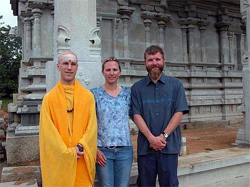

Viaggio
Cousins on Kaua'i
|
|
Viaggio |

Kristi Whitten, Yogi Japendranatha's cousin, married Doug Wurzelbacher at a ceremony near Donner Pass on Saturday, May 8, 2004.
When Vicki learned that the couple would honeymoon on Kaua'i, she said, of course, "You must visit the monastery." She'll say that no matter what Hawaiian island people are visiting. Doug and Kristi did visit, and the trio's photograph in front of the temple construction was published on the monastery site.
|
|
You are navigating Orcmid's Lair |
created 2004-05-16-09:32 -0700 (pdt) by orcmid |